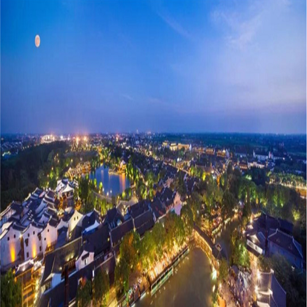

子洲西峰寺
子洲县瓜园则湾乡政府东北2公里处有一块山地，名叫芦草坛，其上有一西峰寺，依山而建。北临乏牛山，西北与柏全山相望。芦草坛虽不雄伟壮观，却也峻峭，人若站于其顶眺望，视野倒也开阔，更因其西峰寺而遐迩闻名。西峰寺坐西北面东南，占地约3亩，一个独院。正殿由三孔拱形洞组成，纯砖结构，顶呈硬山式，用黄色琉璃瓦铺顶，飞檐翘角，兽头独尊，遥遥相望，顶上中有三层小0，独特精致,引人注目。正殿走廊四柱支撑，朱柱彩壁，画栋雕梁，十分生动。

子洲大洪寺
子洲城西五里大理河北岸有大洪寺。“据庙内碑记载，明景泰初年，信士诸公创修庙于底石崖，延及成化年间乃修葺于中峰之巅，后世多次重修，1917年——1920年再重修葺”。(1958年文物普查记录)其寺据今已有550多年的历史了。大洪寺面南而建，与大理河南岸之青龙山、克戎寨(今张家寨)遥遥相对。
子洲淮宁河
淮宁河无定河，陕北最著名的一条河。它从遥远的三边高原西南部的白于山脉奔腾而来，它在陡峭的石壁间、狭窄的河谷里咆哮冲撞，夺路东下，在莽莽的山沟大川上，又有无数的大河小溪从四面八方汇入了它博大的怀抱。淮宁河，就是这无数支流中的一条河流。它发源于子长县石家湾乡高柏山麓的枣树畔村，流经子长、子洲、绥德三县的十个乡镇，近百个村庄，最后从绥德县邓家楼村入无定河，全长85．2公里，流域总面积1222平方公里。
子洲柏全山
柏全山位于瓜园则湾乡政府驻地南3公里处。据传说，此山曾有4株枝叶繁茂的大柏树，故名柏全山。柏全山北高南低，山巅上有一古庙，主奉天皇、地皇、人皇，简称为“三皇庙”。坐北面南，正殿为三孔硬山形顶拱式砖窑，整个寺院虽然面积不大，但布局合理，层次分明，有泥塑五十余尊，保持有晚清风格。